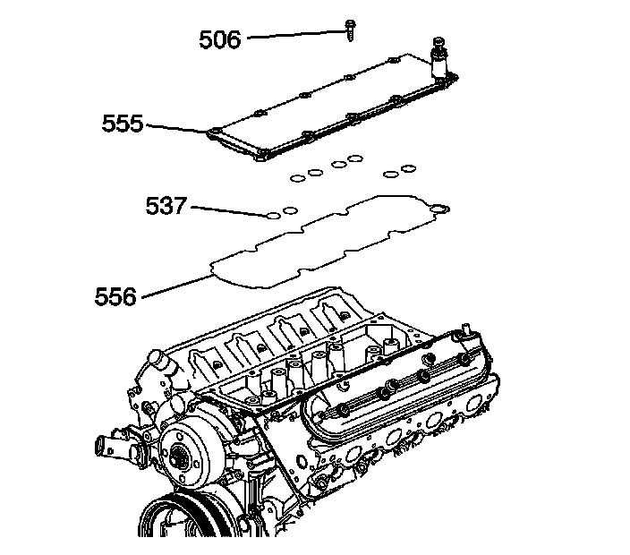
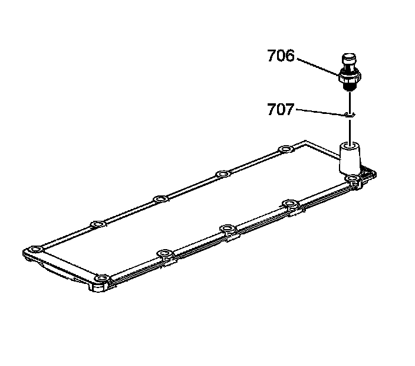

Engine Valley Cover: Service and Repair
Engine Valley Cover Replacement
Removal Procedure

1. Remove the intake manifold.
2. Remove the engine valley cover bolts (506).
3. Remove the engine valley cover (555) and gasket (556).
4. Remove the O-ring seals (537) from the cover.

5. Remove the oil pressure sensor (706) and washer (707).
Installation Procedure
Important: All gasket surfaces should be free of oil or other foreign material during assembly.
1. Apply sealant GM P/N 12346004 (Canadian P/N 10953480) or equivalent, to the threads of the oil pressure sensor.
Notice: Refer to Fastener Notice.
2. Install a NEW washer (707) and the oil pressure sensor (706).
Tighten the sensor to 35 N.m (26 lb ft).
3. Lubricate the O-ring seals with clean engine oil.
4. Install the O-ring seals (537) to the cover.
5. Set the engine valley cover (555) onto the engine.
6. Install the engine valley cover bolts (506).
Tighten the bolts to 25 N.m (18 lb ft).
7. Install the intake manifold.